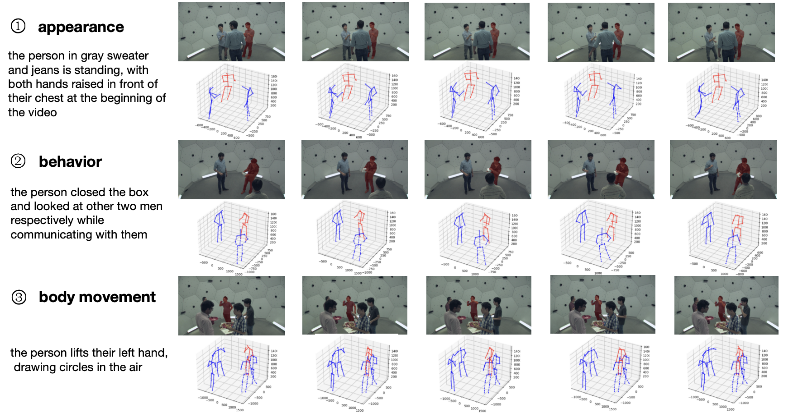

Language-driven 3D Pose Estimation: A New Dataset and Method
Tingrui Shen, Bangzhen Liu, Zhirun Fan, Shiting Zhang, Weifeng Pan, Sun Fan, Dan Cao, Shengfeng He
Paper
Dataset
Code

Language-driven 3D Pose Estimation: A New Dataset and Method by Tingrui Shen is licensed under CC BY-NC-SA 4.0